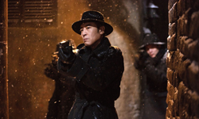
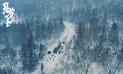
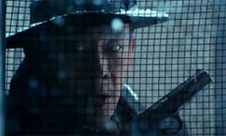
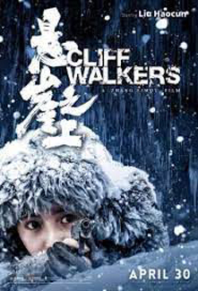
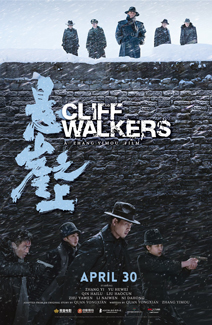
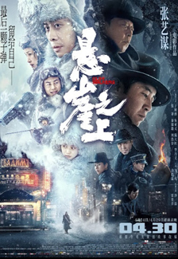
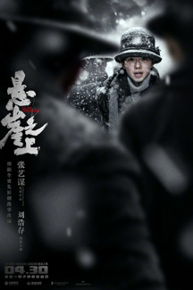
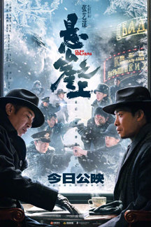
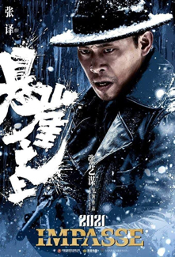

Based on the script by Quan Yongxian, Cliff Walkers is director Zhang Yimou's first foray into the spy genre. Rebounding from a run-in with the Chinese authorities over his previous picture, One Second, he ends up with a film like Cliff Walkers: a gorgeously snowbound period spy movie insulated beneath layers of contorted plotting just as its cast is swaddled in snow-speckled winter furs and fedoras. The film is a muddle of a plot wrapped around a bland, committee-approved message, but mounted with such magnificence it’s possible not to really mind.
Set the puppet state of Manchukuo in the 1930s, the film follows four Communist party special agents who return to China after receiving training in the Soviet Union. Together, they embark on a secret mission code-named "Utrennya". After being sold out by a traitor, the team find themselves surrounded by threats on all sides from the moment they parachute into the mission. Will the agents break the impasse and complete their mission? On the snowy grounds of Manchukuo, the team will be tested to their limit.





Aside from a terse end title celebrating the "heroes of the revolution" and a dinner-time toast to the proletariat recited in Mandarin and Russian, the party line that Zhang doubtless had to toe is backgrounded. Even the references to Japanese mass atrocities of the time are downplayed - wisely, given the uncomfortable hypocrisy of a Chinese film mentioning internment camps at this moment, however incidentally. By design or otherwise, Cliff Walkers isn’t political enough to offend, or moving enough to last, but it is beautiful enough to pass the time pleasurably.


